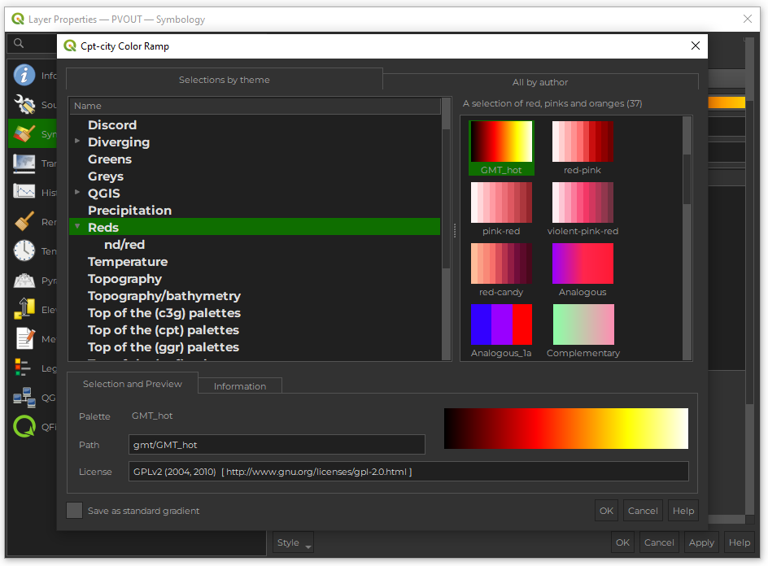
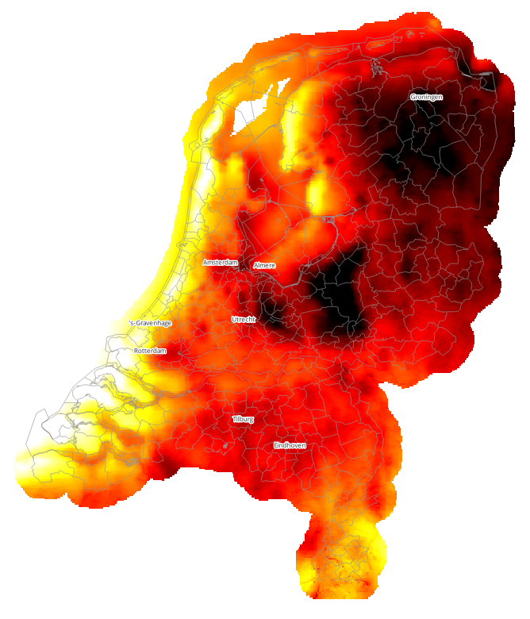
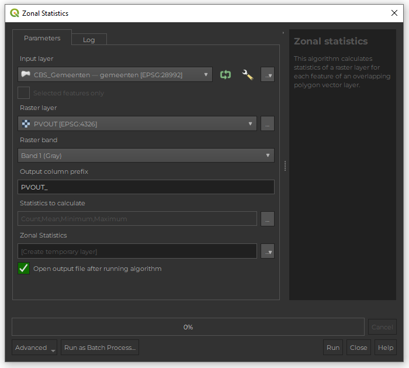
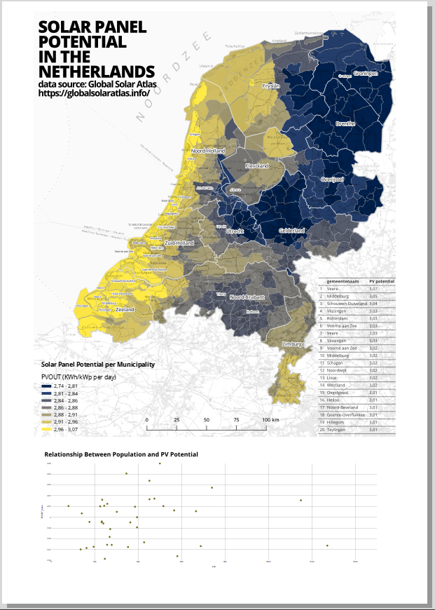

Mapping Photovoltaic Potential Across Dutch Municipalities: A QGIS Zonal Statistics Tutorial
Classification: Intermediate GIS Analysis | Spatial Data Processing | Environmental & Energy Assessment
Subcategory: Raster-Vector Analysis, Cartographic Visualization, Exploratory Data Analysis
Learning Level: Advanced Beginner to Intermediate
Time Estimate: 2–3 hours
Software Required: QGIS 3.28+ with Data Plotly plugin
Overview
This tutorial guides you through creating a national-level map of photovoltaic (PV) potential for Dutch municipalities. You will combine municipal boundary vector data with a PV potential raster layer, perform zonal statistics to extract summary metrics, and visualize results through classification maps and exploratory visualizations.
This is an example of the expected final output:

Learning Outcomes:
By completing this tutorial, you will be able to:
✅ Clean and prepare municipal boundary vector data in QGIS
✅ Perform zonal statistics to extract raster values summarized by vector polygons
✅ Create a classified choropleth map using quantile classification
✅ Generate a ranked attribute table displaying top-performing municipalities
✅ Produce an exploratory scatterplot to examine relationships between variables
✅ Compile a professional map layout combining cartography, tables, and charts for presentation
System Requirements & Setup
Software Installation
QGIS: - Download the latest stable version (3.28+) from https://qgis.org/download/ - Installation instructions vary by operating system (Windows/Mac/Linux)
Required QGIS Plugins:
- Data Plotly – For interactive charting and scatterplots
- Go to Plugins → Manage and Install Plugins
- Search for “Data Plotly”
- Click Install
- Restart QGIS to activate if needed.
Data Requirements
Download the following datasets from this Surfdrive link:
For this exercise, you will work with the following datasets: - Municipal Boundaries: CBS_Gemeenten - gemeenten (vector polygon layer) - PV Potential Raster: PVOUT (continuous raster layer representing solar irradiance or PV output) - Project File: AR2U086_assigment_1.qgz (pre-configured QGIS project)
Workflow Overview
The analysis follows a systematic GIS workflow:
| Phase | Tasks |
|---|---|
| Preparation | Open QGIS project; organize and examine layers |
| Data Cleaning | Remove extraneous fields from municipal boundaries; standardize attribute names |
| Raster Styling | Apply colour ramps and stretch techniques to visualize PV potential raster |
| Zonal Analysis | Extract summary statistics (mean, min, max, count) from raster by municipality |
| Cartographic Design | Create classified choropleth map; design colour scheme and symbology |
| Visualization | Produce attribute table, scatterplot, and supporting map elements |
| Final Output | Compile print layout and export as PDF or high-resolution image |
Step 1: Open and Organize the Project
Launch QGIS from your applications menu or desktop shortcut.
Open the Project:
- Go to File → Open Project
- Navigate to
AR2U086_assigment_1.qgz - Click Open
Examine Layers in the Layers Panel:
- On the left side, locate the Layers Panel (if not visible, go to View → Panels → Layers)
- You should see:
CBS_Gemeenten - gemeenten(municipalities vector layer)PVOUT(PV potential raster layer)- Possibly one or more basemap layers (e.g., OpenStreetMap, satellite imagery)
Remove Unnecessary Layers:
- For a cleaner workspace, remove any basemap or reference layers not needed for analysis
- Right-click a layer and select Remove Layer
- Keep only:
CBS_Gemeenten - gemeentenPVOUT
Step 2: Save a New Project
Before making any modifications, save the project under a new name to preserve the original:
- Go to Project → Save As
- In the dialog, enter a descriptive filename:
- Example:
PV_Potential_Analysis_[YourName]_[Date].qgz
- Example:
- Choose a save location (e.g., your Documents folder or course directory)
- Click Save
This ensures you have a backup and can compare changes to the original if needed.
Step 3: Data Cleaning & Preparation
3.1 Clean the Municipalities Dataset
Removing extraneous fields reduces file size, simplifies the attribute table, and focuses attention on relevant data.
Open the Attribute Table:
- In the Layers Panel, locate
CBS_Gemeenten - gemeenten - Right-click and select Open Attribute Table
- A new window will open showing all records and fields
Enter Editing Mode:
- In the Attribute Table toolbar (top of the table window), locate the Pencil icon
- Click it to enter Toggle Editing Mode
- The pencil icon will turn yellow/highlighted, indicating edit mode is active
- A yellow pencil will also appear next to the layer name in the Layers Panel
Remove Unnecessary Fields:
- In the Attribute Table toolbar, click the Delete Fields button (usually a trash/bin icon)
- A dialog listing all fields in the dataset will appear
- Keep only these fields by unchecking (deselecting) all others:
gemeentecode– Municipality Code (unique identifier)gemeentenaam– Municipality Name (for labels and reference)water– Water Surface Area (optional, for geographic context)aantalinwoners– Population (required for the scatterplot analysis)
- After unchecking unwanted fields, click OK or Apply
- All unselected fields will be deleted from the dataset
Verify Changes:
- Review the Attribute Table to confirm that only four columns remain
- Scroll through a few rows to ensure data integrity
Save and Exit Edit Mode:
- Click the Pencil icon again to exit edit mode
- When prompted: “Save changes to layer ‘CBS_Gemeenten - gemeenten’?”
- Click Save Changes to confirm
3.2 Style the PV Potential Raster
Proper raster visualization enhances pattern recognition and communicates data effectively.
Open the Layer Styling Panel:
- Select the
PVOUTlayer in the Layers Panel (click once to highlight it) - Open the styling interface:
- Option A: Go to View → Panels → Layer Styling (or press F7)
- Option B: Double-click the layer name directly
- The Layer Styling panel will open on the right side of QGIS
Change the Render Type to Singleband Pseudocolor:
- In the Layer Styling panel, ensure the Symbology tab is active
- Locate the Render Type dropdown (currently may be “Singleband Gray” or similar)
- Click the dropdown and select Singleband Pseudocolor
- This allows continuous raster values to be represented as a colour gradient
Apply a Color Ramp from cpt-city:
- In the Symbology tab, click on the Color Ramp dropdown
- Click on Create New Color Ramp…
- Select Catalog: cpt-city to access the catalog
- Choose a colour scheme appropriate for PV potential (typically sequential or solar-themed):
- GMT_hot – Progresses from black → red → orange → yellow → white; emphasizes high values
- Viridis – Purple → green → yellow; perceptually uniform and colorblind-friendly
- turbo – Blue → cyan → yellow → red; high contrast, modern appearance
- YlOrRd – Yellow → orange → red; classic scientific choice
- Preview: The map will update as you select different ramps

Adjust Min-Max Values for Optimal Contrast:
- Locate Min / Max Values Settings (often appears as a button or dropdown)
- Click to open stretch options
- Select Cumulative Count Stretch (2-98%)
- This stretches the colour ramp to the 2nd and 98th percentiles
- Excludes extreme outliers that might compress the visible range
- Results in better contrast and clearer patterns
- Alternative: Manually set min/max values if you know the data range
- Example: Min = 500 kWh/m²/year, Max = 2000 kWh/m²/year
Apply Transparency (Optional but Recommended):
- In the Layer Styling panel, click the Transparency tab
- Set No Data Value (if missing/null pixels exist):
- This makes background or missing areas transparent rather than colored
- Adjust Opacity slider (0–100%) if the raster will overlay a basemap:
- Set to 85–95% to slightly show features beneath the raster
Apply and Review Styling:
- Click Apply to visualize the updated symbology on the map
- Return to the main QGIS canvas and examine the raster:
- Spatial patterns should now be clearly visible
- Colour gradient should smoothly represent variation in PV potential
- If patterns are unclear or colours don’t match your preference:
- Return to the Styling panel and adjust the colour ramp or stretch settings
- Click Apply again to update

Step 4: Perform Zonal Statistics
Zonal statistics summarize raster values (PV potential) within vector polygon boundaries (municipalities). This produces new columns in the municipalities attribute table containing aggregate metrics.
Open the Zonal Statistics Tool:
- Go to Processing → Toolbox (or press Ctrl+Alt+T)
- If the Processing Toolbox panel doesn’t appear:
- Go to View → Panels → Processing Toolbox
- In the search bar at the top of the Processing Toolbox, type:
Zonal Statistics - Double-click Zonal Statistics to open the tool dialog
Configure Input Parameters:
The Zonal Statistics dialog will open with several fields to fill:
- Input vector layer:
- Click the dropdown and select
CBS_Gemeenten - gemeenten - This is the polygon layer whose boundaries define the zones
- Click the dropdown and select
- Raster layer:
- Click the dropdown and select
PVOUT - This is the raster data to be summarized
- Click the dropdown and select
- Raster band:
- If
PVOUTis a single-band raster, select Band 1 - (Most common for single-band scientific rasters)
- If

Select Statistics to Calculate:
Below the input parameters, you’ll see checkboxes for various statistics. Enable:
- ☑ Mean – Average PV potential per municipality (primary metric)
- ☑ Count – Number of raster pixels within each municipality
- ☑ Min – Minimum PV potential value found in the municipality
- ☑ Max – Maximum PV potential value found in the municipality
Leave other statistics unchecked (Median, StDev, etc.) unless your analysis requires them.
Set Output Parameters:
- Output column prefix:
- Enter:
PV_ - Output column names will then be:
PV_mean,PV_count,PV_min,PV_max - This naming convention makes fields easily identifiable
- Enter:
- Statistics output:
- Click the dropdown (currently may show “Create temporary layer”)
- Select Save to File
- Choose output location and filename:
- Click the folder/file browser button next to the output field
- Navigate to your project directory
- Enter filename:
municipalities_with_PV_stats.gpkg - (GeoPackage format is recommended for compatibility and portability)
- Click Save to confirm the output location
Run the Tool:
- Click the Run button (bottom right of the dialog)
- QGIS will process the operation:
- For each municipality polygon, the tool extracts all raster pixels within its boundary
- Calculates the selected statistics (mean, count, min, max)
- Creates a new vector layer with these statistics added as columns
- When complete, a notification will appear: “Finished” or “Process completed successfully”
Verify Results:
- The new layer (
municipalities_with_PV_statsor similar) will appear in the Layers Panel - Make it the active layer (click once to select it)
- Right-click and select Open Attribute Table
- Scroll to the right side of the table
- Confirm the new columns exist:
PV_mean– Average PV potential (typically 800–2000 range for the Netherlands)PV_count– Number of pixels (varies by municipality size)PV_min– Minimum valuePV_max– Maximum value
- Review a few values to ensure they are reasonable and complete (no null values)
Step 5: Create Cartographic Visualizations
5.1 Create a Classified Choropleth Map
A choropleth map uses colour gradients to display the spatial distribution of a continuous variable. Classifying continuous PV data into discrete categories (e.g., 5 classes) makes the map easier to interpret and print.
Select the Data Layer:
- In the Layers Panel, click on the layer containing zonal statistics results (
municipalities_with_PV_stats) - This layer should be visible on the map canvas
Open the Layer Styling Panel:
- Go to View → Panels → Layer Styling (or press F7)
- The Layer Styling panel opens on the right side
Change Classification Type to Graduated:
- In the Symbology tab, locate the classification dropdown (top of the panel)
- Click it and select Graduated
- The panel will reconfigure to show classification options
Configure Classification Parameters:
- Value (Column):
- Click the dropdown below “Graduated”
- Select
PV_mean(mean PV potential from zonal statistics)
- Classification Mode:
- Click the dropdown labeled “Classification Mode” or “Method”
- Select Quantiles (Equal Count)
- This divides the data into classes such that each class contains approximately the same number of municipalities
- Makes spatial patterns easier to see than equal-interval classification
- Number of Classes:
- Set to 5 (a standard choice balancing detail with simplicity)
- You can experiment with 4–7 depending on your data and preferences
Choose a Colour Ramp:
- Click the Color Ramp dropdown
- Select cpt-city to access advanced colour schemes
- Choose a sequential or diverging ramp suitable for PV potential:
- GMT_hot or YlOrRd – Yellow/orange/red progression (emphasizes high values, common for energy/solar)
- turbo – Modern, high-contrast ramp
- Blues, Greens, Purples – Single-hue sequential schemes
- Reverse (optional): If you want low values in warm colours and high values in cool colours, click the Reverse checkbox
Generate Classification Classes:
- Click the Classify button
- The tool automatically calculates class breaks based on your selected method
- Class ranges will appear in a table below
- Review the generated classes:
- Each row shows a class range (e.g., “800.5 – 1200.3”) and its colour
- Check that classes are logical and well-distributed
- (Optional) Manually Edit Class Breaks:
- Double-click any value in the “Value” or “Label” columns to edit it
- Useful for rounding numbers or creating custom labels (e.g., “Low,” “Medium,” “High”)
Adjust Styling Details:
- Stroke (Outline):
- Find “Stroke width” or similar option
- Set to 0.5 pt (thin, subtle boundaries between municipalities)
- This maintains visual distinction without overwhelming the map
- Stroke color:
- Choose a dark grey or black for contrast against the fill colours
- Opacity:
- Set to 90% to ensure clear visibility while subtly revealing underlying features
Apply and Review:
- Click Apply to update the map canvas
- Return to the main QGIS canvas and inspect the choropleth:
- Southern municipalities should appear warmer (higher PV potential)
- Northern municipalities should appear cooler (lower potential)
- Patterns should reflect geographic and climatic variation
- If the classification doesn’t match your expectations:
- Return to the Styling panel and adjust the colour ramp, number of classes, or classification mode
- Click Apply again
5.2 Add a Ranked Table to the Print Layout
A table listing the top 20 municipalities by PV potential provides quantitative context and allows readers to look up specific values.
Create a New Print Layout:
- Go to Project → New Print Layout
- A dialog appears asking for a layout name
- Enter:
PV_Potential_National_Map - Click OK
- The Print Layout editor opens in a new window
Insert the Choropleth Map:
- In the Items panel (right side), click Add Map
- On the layout canvas, click and drag to draw a rectangle:
- This rectangle defines the area where the map will appear
- Release the mouse to place the map
- Resize and reposition as needed by clicking and dragging corners/edges
- The map should occupy about 60–70% of the layout
Add an Attribute Table to the Layout:
- In the Items panel (right side), click Add Attribute Table
- On the layout canvas, click and drag to draw a rectangle below or beside the map
- Release to place the table
Configure the Table Display:
- Click the Item Properties panel (right side, select the “Item Properties” tab if not already visible)
- Ensure the table is selected (highlighted in the layout)
- In Item Properties, set:
- Layer: Select your municipalities layer with zonal statistics (e.g.,
municipalities_with_PV_stats)
- Layer: Select your municipalities layer with zonal statistics (e.g.,
Configure Sorting to Show Top 20 Municipalities:
In the Item Properties panel, locate the Table section:
Check Show Only Visible Features (optional; filters by map extent if the map is zoomed in)
Check Sort by Column
In the sort dropdown:
- Select PV_mean (the column to sort by)
Set sort order to Descending (highest values first)
- This puts the highest PV potential municipalities at the top of the table
Set Number of Rows to 20
- Only the top 20 municipalities will display
Customize Table Appearance:
In the Appearance section:
Visible Attributes (Columns):
- Click to expand and select only:
gemeentenaam(Municipality Name)PV_mean(Mean PV Potential)
- Deselect other columns to reduce clutter
- Click to expand and select only:
Header Font Size: Increase to 12–14pt (larger than body text)
Row Height: Increase to 8–10mm for better readability
Column Alignment:
- Align text center or left for consistent appearance
Fonts:
- Choose a clear, professional font (e.g., Arial, Liberation Sans)
Apply and Position:
- Click Apply to update the table
- In the layout, resize and reposition the table:
- Ensure it doesn’t overlap the map or other elements
- Leave margins for a professional appearance
5.3 Create an Exploratory Scatterplot
A scatterplot examines the relationship between two variables—in this case, municipal population and PV potential—to identify correlations or patterns.
Install and Activate Data Plotly Plugin:
If not already done:
- Go to Plugins → Manage and Install Plugins
- Search for Data Plotly
- Click Install
- Close the dialog (QGIS may restart)
Open the Data Plotly Panel:
- Go to View → Panels
- Select Data Plotly from the list
- The Data Plotly panel will open (usually on the right side)
Configure Scatterplot Parameters:
In the Data Plotly panel, set:
Plot Type: Click the dropdown and select Scatter Plot
Layer: Select your municipalities layer with zonal statistics
X Axis Field: Click the dropdown and select
aantalinwoners(Population)Y Axis Field: Click the dropdown and select
PV_mean(Mean PV Potential)
Customize Visual Appearance:
Point Size: Increase to 8–12 for better visibility
Color: Select a colour or gradient scheme:
- Choose Viridis or Turbo to match your map’s symbology (or any gradient you prefer)
Opacity: Set to 0.7–0.8 to make overlapping points visible
Show Trendline (optional):
- Enable to display a linear regression line and R² value
- This helps visualize correlation strength
Add Titles and Axis Labels:
Plot Title: “Relationship Between Population and Mean PV Potential”
X-Axis Title: “Population (Aantal Inwoners)”
Y-Axis Title: “Mean PV Potential (kWh/m²/year)”
Legend: Enable and position appropriately
Generate and Export the Chart:
- Click Plot (or similar button) to generate the interactive scatterplot
- Review the visualization:
- Does the plot show a clear trend?
- Are there interesting outliers?
- Click the Export button (camera/download icon) to save as PNG or SVG
- Choose a location and filename (e.g.,
scatterplot_population_vs_PV.png)
Embed in Print Layout (Optional):
- If you exported the chart, you can add it to your print layout:
- In the layout, click Add Image
- Select the exported PNG/SVG file
- Position it on the layout
Step 6: Finalize and Export the Print Layout
Add Map Elements:
- Title:
- Click Add Text in the Items panel
- Draw a text box at the top of the layout
- Type: “Photovoltaic Potential Across Dutch Municipalities”
- Increase font size to 24–28pt
- Legend:
- Click Add Legend in the Items panel
- Draw a legend box (usually on the right side)
- Configure in Item Properties:
- Select the municipalities layer to display classes
- Customize title and font sizes
- Scale Bar:
- Click Add Scale Bar in the Items panel
- Draw it in a corner (usually bottom-left)
- Choose an appropriate scale format (e.g., “1:2,000,000”)
- North Arrow (optional):
- Click Add North Arrow in the Items panel
- Position in a corner
- Enhances geographic orientation
- Source/Attribution:
- Click Add Text
- Enter: “Data source: CBS (Centraal Bureau voor de Statistiek), PVOUT dataset”
- Use 8–10pt font
Review and Refine:
- Check that all elements are:
- Properly positioned and not overlapping
- Legible at the intended output size (check zoom level)
- Aligned consistently with proper margins (10–15mm from edges)
- Verify colour clarity:
- Print a preview or check on-screen at 100% zoom
- Adjust fonts, sizes, and colours as needed
Export the Final Layout:
- Export as PDF (recommended for printing/sharing):
- Go to Layout → Export as PDF
- Choose save location and filename (e.g.,
PV_Potential_National_Map.pdf) - Set Resolution to 300 DPI (print quality)
- Click Save
- Export as High-Resolution Image (for presentations):
- Go to Layout → Export as Image
- Select PNG format
- Set DPI to 300
- Click Save
- Export as SVG (for further editing in design software):
- Go to Layout → Export as SVG
- Useful if you want to refine the layout in Adobe Illustrator or Inkscape

Troubleshooting Guide
| Problem | Likely Cause | Solution |
|---|---|---|
| Zonal Statistics produces no output | Misaligned CRS; empty selection | Verify both layers use the same coordinate reference system (EPSG:28992 for Netherlands). Check that both layers are valid. |
| Raster appears entirely black or white | Extreme outliers in data; poor stretch settings | Use “Cumulative Count Stretch (2-98%)” instead of standard Min-Max. Manually set min/max values to reasonable ranges. |
| New columns don’t appear in attribute table | Editing mode not exited; output layer not loaded | Ensure you exited editing mode and saved changes. Check the Layers panel to confirm the output layer was added. |
| Table shows all municipalities instead of top 20 | Sorting not enabled; wrong sort column selected | In Item Properties, enable “Sort by Column”, select PV_mean, set to Descending, and limit rows to 20. |
| Scatterplot doesn’t render | Data Plotly not installed or not restarted | Install Data Plotly via Plugins menu. Restart QGIS after installation. Check that layers/fields are correctly selected. |
| Print layout elements misaligned | Working in map canvas instead of layout | All layout adjustments should be made in the layout editor, not the main canvas. Use zoom and pan tools within the layout. |
| Exported PDF is low quality | Resolution set too low | Ensure you set DPI to 300 (or higher) when exporting. 72 DPI will appear pixelated when printed. |
| Missing data or null values in new columns | Raster pixels outside polygon boundaries; NoData regions | This is expected if some municipality areas lack raster data. Check the Count column—zero values indicate no valid data. |
Interpretation Guidelines
Understanding the Choropleth Map:
- Darker/warmer colours represent municipalities with higher mean PV potential (better for solar installations)
- Lighter/cooler colours represent lower PV potential
- Spatial patterns typically reflect:
- Latitude: Southern municipalities have higher solar irradiance
- Elevation: Higher elevations may receive more direct sunlight
- Cloud cover and climate: Oceanic vs. continental influence
- Southern provinces (e.g., Limburg, North Brabant) typically show highest potential
- Northern provinces (e.g., Friesland, Groningen) typically show lower potential
Reading the Ranked Table:
- The top 20 municipalities represent the best-suited locations for utility-scale or large distributed PV projects (from a solar resource perspective)
- Important caveat: High PV potential alone does not guarantee feasibility; also consider:
- Land availability (rooftops, industrial areas, agricultural land)
- Grid capacity and connection points
- Land ownership and zoning restrictions
- Proximity to demand centers
Interpreting the Scatterplot:
- Horizontal trendline: PV potential is independent of population; resources distributed evenly across rural and urban areas
- Upward trendline: PV potential increases with population density (possibly correlating with urban land or southerly location)
- Downward trendline: PV potential decreases with population density (less common; might indicate northern, densely populated regions)
- Scattered points with weak trendline: Weak correlation; other factors beyond population drive PV variation
- Outliers: Specific municipalities with unusually high/low PV for their population; may represent opportunities or challenges
Extensions and Advanced Topics
Once you complete this tutorial, consider exploring:
Seasonal PV Variation: Create separate maps for summer vs. winter months to highlight seasonal opportunity windows
Roof Area Integration: Intersect rooftop area data with PV potential to calculate total rooftop-mounted capacity potential
Feasibility Assessment: Layer PV potential with land use, ownership, protected areas, and zoning data to identify realistically developable zones
Multi-Criteria Analysis: Use weighted overlay to combine PV potential with land costs, accessibility, environmental impact, and social acceptance
Time Series Analysis: If historical data exists, track changes in PV potential over multiple years (e.g., due to land use changes)
Grid Capacity Analysis: Combine PV maps with electrical grid data to identify bottlenecks and optimal connection points
References & Resources
QGIS Documentation: - Official QGIS User Manual: https://docs.qgis.org/ - Zonal Statistics: https://docs.qgis.org/latest/en/docs/user_manual/processing_algs/qgis/rasteranalysis.html#zonal-statistics
Data Sources: - CBS (Statistics Netherlands): https://www.cbs.nl/ (municipal boundaries, population data) - PVOUT Dataset: [Specify source—e.g., Copernicus, NASA, IRENA]
Learning Resources: - QGIS Training Manual: https://docs.qgis.org/latest/en/docs/training_manual/ - Data Plotly Documentation: Check plugin repository or GitHub
Feedback & Continuous Improvement
If you encounter issues, have questions, or wish to provide feedback:
- Check this troubleshooting guide first – Most common issues are covered
- Consult QGIS documentation at https://docs.qgis.org/
- Review plugin READMEs (in the plugin download page or repository)
- Contact instructors or teaching assistants in your course
- Submit feedback to course coordinators to improve future versions of this tutorial
Appendix: Quick Reference
Key Keyboard Shortcuts: - F7 – Toggle Layer Styling Panel - Ctrl+Alt+T – Open Processing Toolbox - Ctrl+S – Save Project - Ctrl+H – Toggle Full Screen Mode
Common Data Formats: - GeoPackage (.gpkg) – Recommended for vector data (SQL-based, portable) - Shapefile (.shp + .dbf + .shx) – Legacy but widely used - GeoJSON (.geojson) – Web-friendly, human-readable - GeoTIFF (.tif) – Recommended for raster data
Document Version: 1.1 (Updated February 2026)
QGIS Version: 3.28+
Difficulty Level: Intermediate (Advanced Beginner+)
Expected Time: 2–3 hours